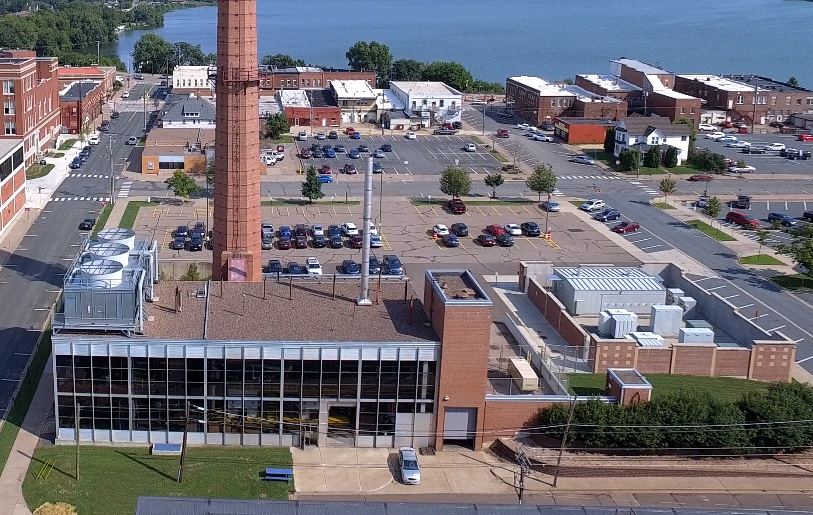
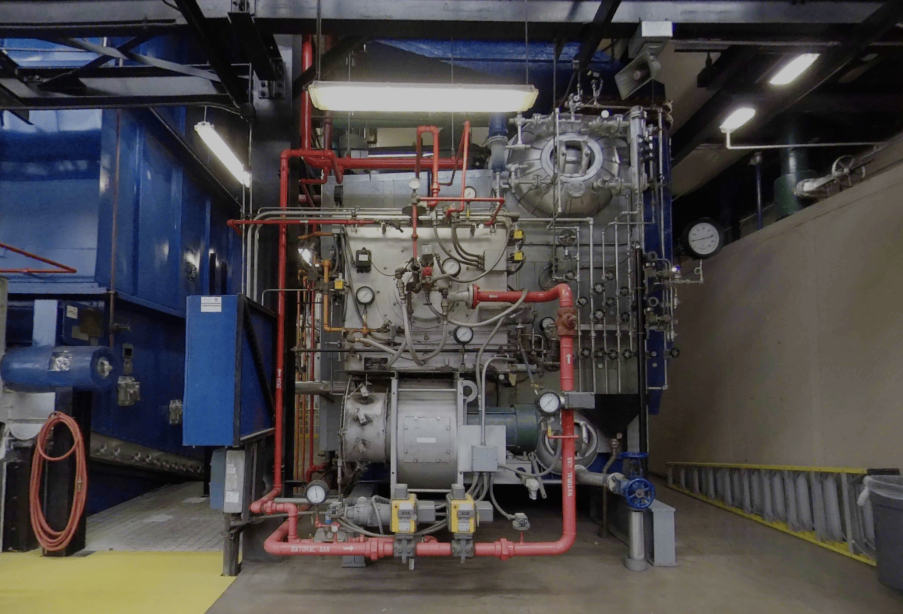
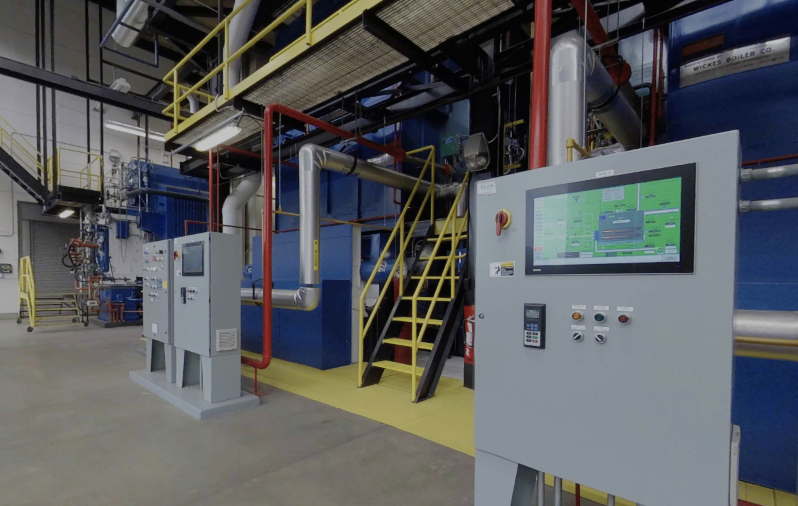
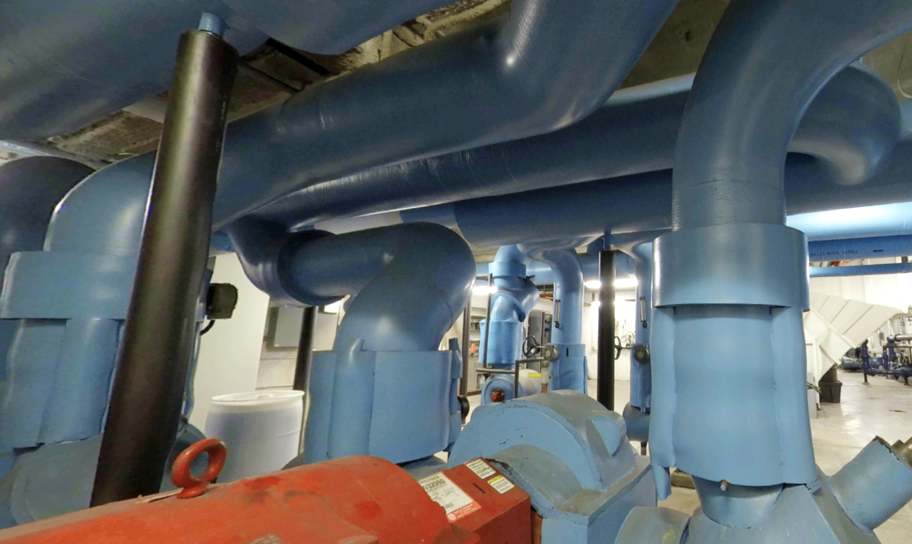
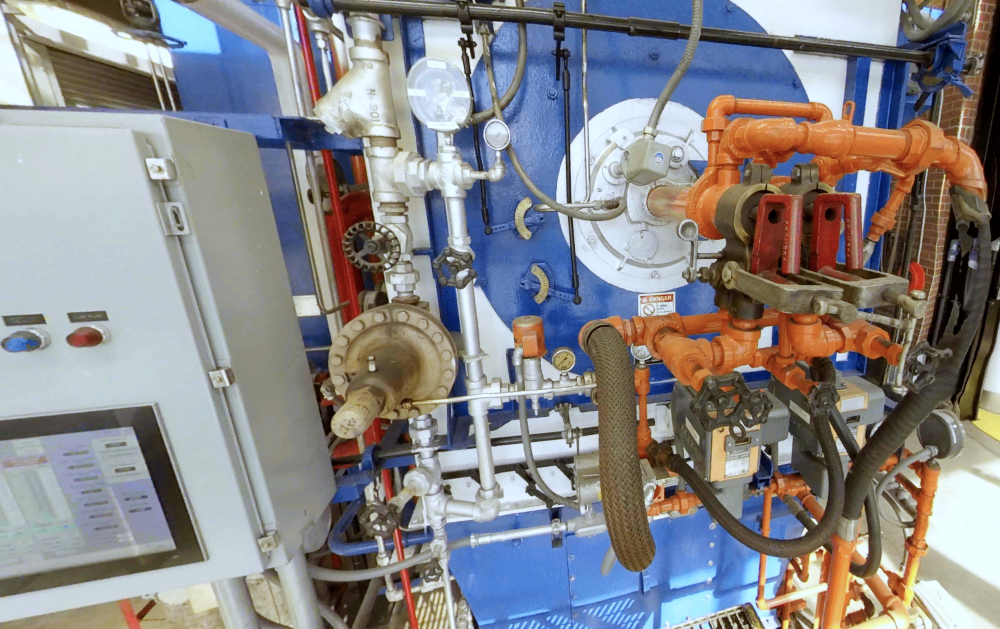
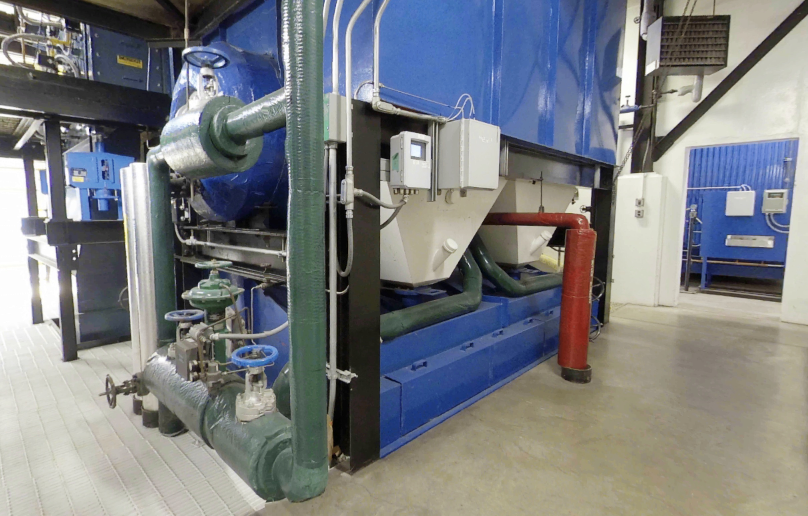
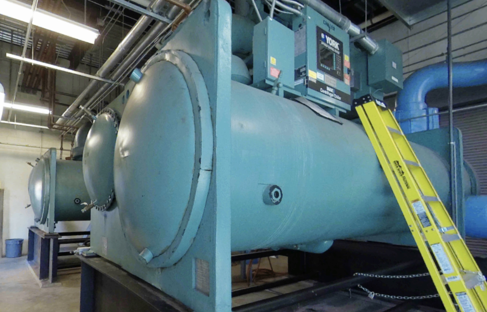
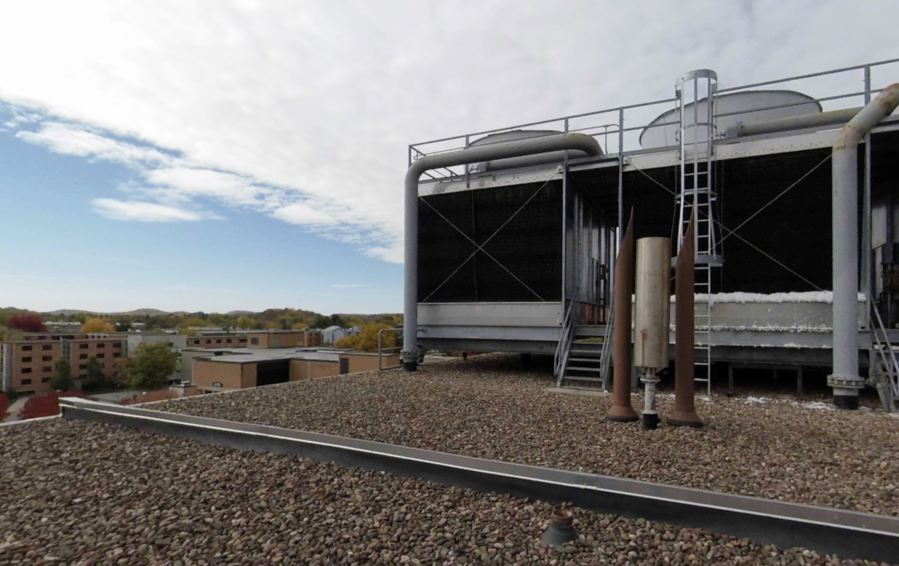
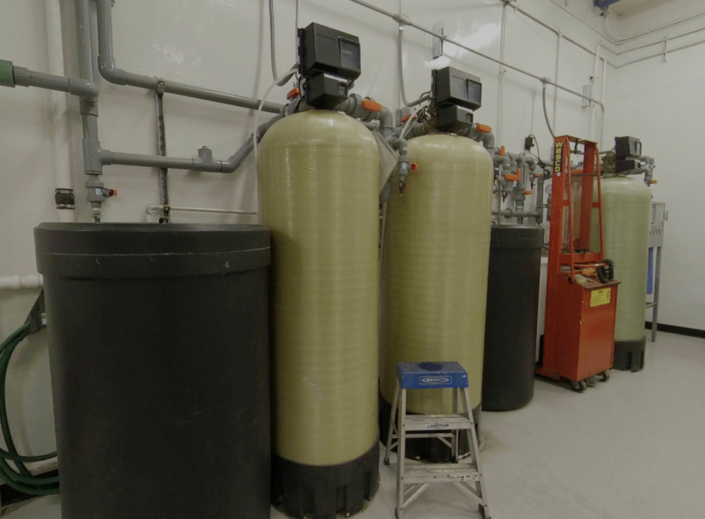
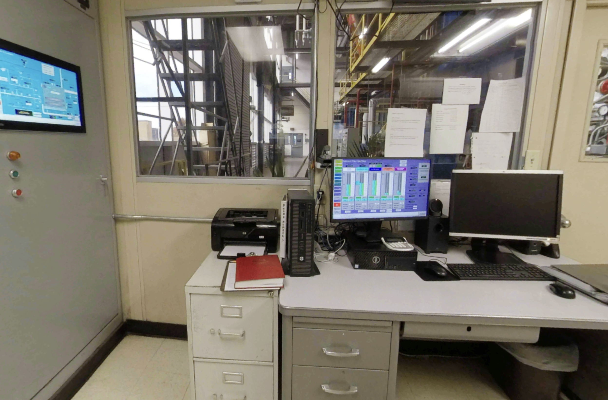

Facility Overview
Introducing the central heating and chilling plant

Introducing the central heating and chilling plant

Learn about the water-tube boilers used in the heating plant

Theories about steam turbines

The piping system distributes the heating/chilling medium

Recapturing some energy before it leaves the plant

The key structures in the water-tube boilers

The essential mechanism of the chilling plant

Releasing the captured heat in the refrigeration cycle

Preparation of the water used throughout the plant

The workers keeping the plant running
In Spring of 2022, UW Stout professors Oai Ha, Keif Oss, and Seth Berrier started a research project to explore how a virtual of the campus central heating plant could help enhance learning outcomes in an undergraduate course in thermodynamics. This site is the ongoing work of that project and will provide a way to explore the central heating plan on the Stout campus and to learn about and asses basic thermodynamics concepts in the plant.
This work is funded by a grant from the Xcel Energy Foundation